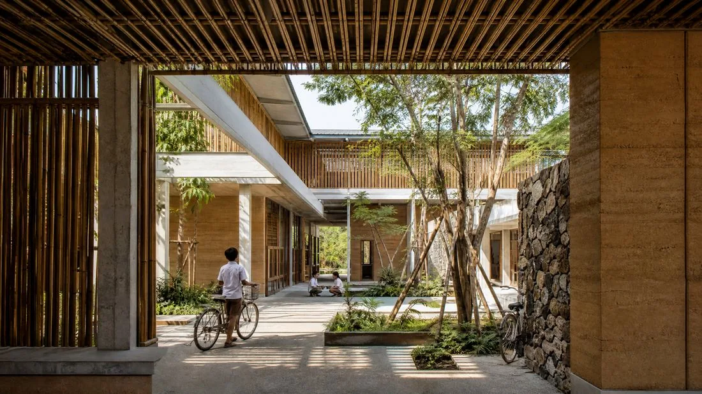
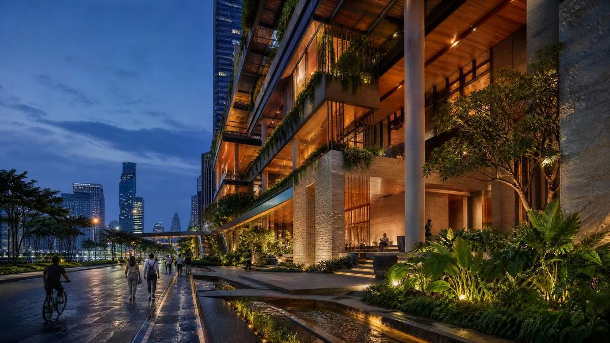

Journal
Thaïlande : Quand la Tradition Rencontre le Modernisme Tropical

L'architecture contemporaine thaïlandaise traverse une période de synthèse entre héritage vernaculaire et exigences climatiques modernes. Plutôt qu'une esthétique importée, le «modernisme tropical» qui domine aujourd'hui la scène locale relève d'une véritable ingénierie du confort.
Le modernisme tropical : une réponse à l'urgence climatique
Cette approche remet au goût du jour des principes anciens : la surélévation sur pilotis, qui protège des inondations de mousson tout en favorisant la ventilation naturelle sous le plancher habitable, ou les larges débords de toiture qui ombragent les façades sans recourir à la climatisation. Des agences comme IDIN Architects en ont fait un principe fondateur — intégrer la structure à son environnement plutôt que de s'en isoler.
Innovation matérielle et expérimentation vernaculaire
Le renouveau touche aussi les matériaux. À côté du béton et de l'acier, toujours dominants dans les grandes structures urbaines, des studios comme Chiangmai Life Architects démontrent que le bambou et la terre crue peuvent répondre aux exigences de sécurité et de design des bâtiments contemporains, y compris publics.

L'urbanisme de Bangkok et le quiet luxury
À Bangkok, cette évolution rencontre une tendance de fond du marché résidentiel haut de gamme : le «quiet luxury», où la longevité du dessin et l'honnêteté des matériaux priment sur l'ostentation. Des projets d'envergure comme One Bangkok illustrent cette ambition de créer des «villes dans la ville», intégrant jardins verticaux et gestion intelligente de l'eau.

Conclusion
Le défi des prochaines années sera de maintenir cet équilibre entre tradition et innovation face à la pression foncière et à des épisodes climatiques de plus en plus marqués — sans jamais perdre de vue que la modernité, sous les tropiques, se mesure autant à sa sophistication qu'à son ancrage dans le territoire.